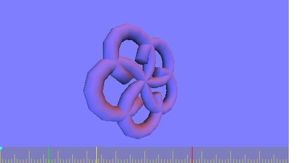
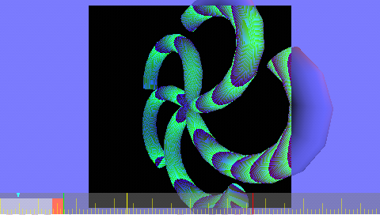

yet another PlayStationPortable Documentation
10 Video Processing
10.1 Overview
- vram is located at 0x04000000
- Pixel format is 16 bit BGR (ABBBBBGGGGGRRRRR.) or 32 bit
- visible Screen is 480*272 pixel
- virtual Screensize is 512*272 pixel
10.2 VRAM Mirrors
Writing to the VRAM Mirrors seem to have no effect; setting the drawbuffer
pointer to one of these VRAM aliases just works as normal. So these
Mirrors only have effects for reads, but work for all readers. (GE,
Framebuffer scandout...)

The raw depth buffer in the normal VRAM space is rearranged in a swizzled-like
way. This is the raw dump of the depth buffer converted to an 8bpp
greyscale:
VRAM with "swizzle"
This is clearly a fairly simple structure, with a simple column-wise
rearrangement of each 16 pixel (32 byte) strip. When rearranged, it
looks as expected:
identical to normal VRAM
VRAM with "swizzle" + 32-byte column interleave.
Reading from VRAM+6Mib will give you a proper linearized version of
the depth buffer with no effort. The GE sees the same view; a GE copy
operation returns the same data (represented as RGB 565):
